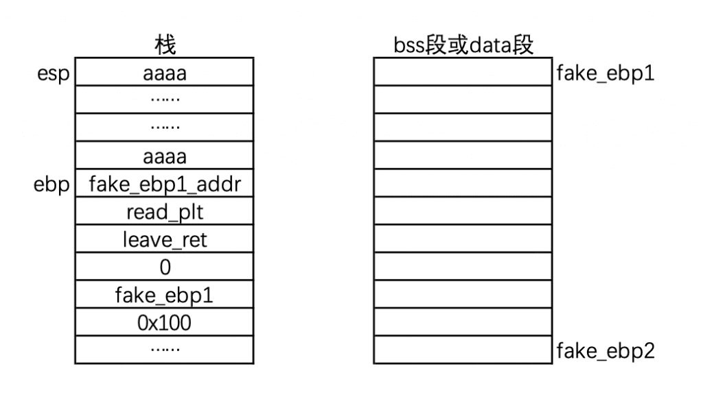
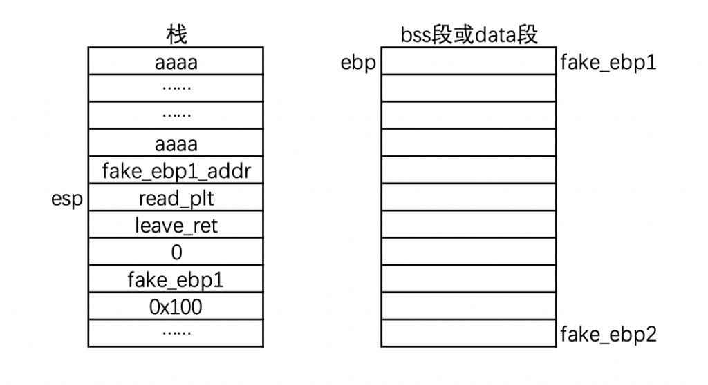
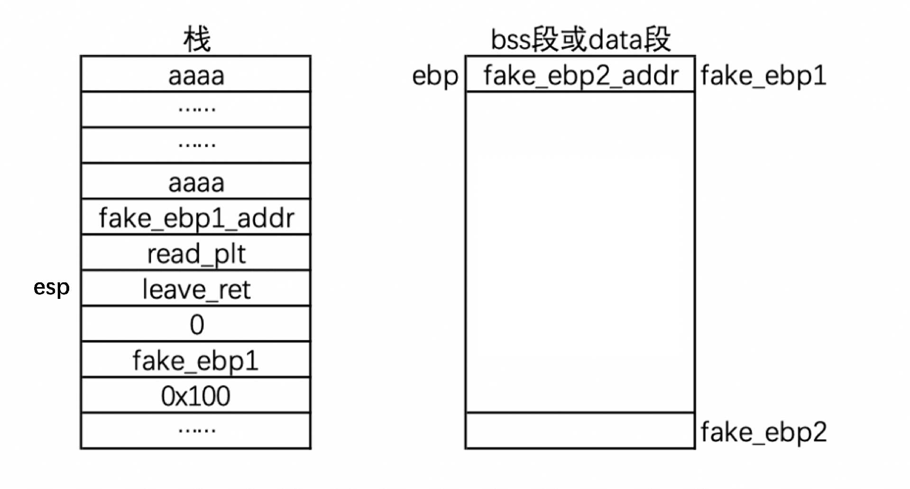
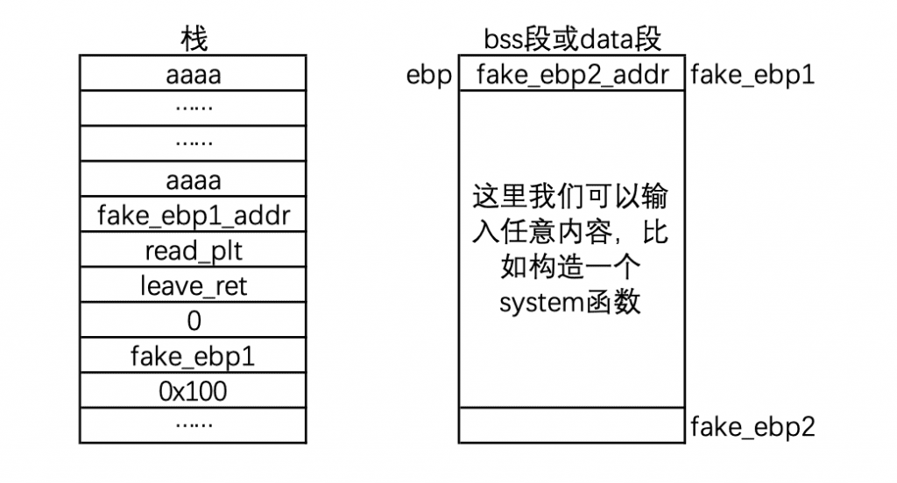
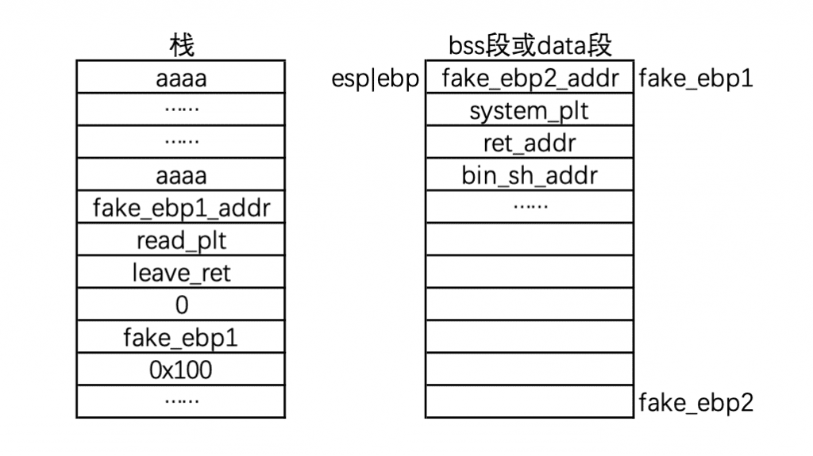
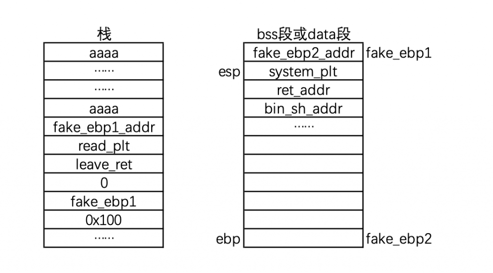

栈迁移
主要参考这个文章，图片也是这个文章里面的：https://cloud.tencent.com/developer/article/2384874
目标
栈迁移就是把控制栈的指针（esp和ebp）控制到某个内存区域上，比如 bss 段某处，这样由于我们能控制这片内存，所以迁移之后我们能控制栈的内容了。
栈迁移通常是一些攻击手段的第一步，比如 ret2dlresolve，先控制栈，然后在栈上伪造内容后，触发某个函数去读取。
具体细节
主要是用 leave; ret 这段组合，其中 leave 就是 mov esp, ebp; pop ebp，具体步骤如下：
步骤一，栈溢出构造内容
现在有一个程序，存在栈溢出漏洞，我们把内容覆盖成了下面这个样子，当然此时 bss 段或者 data 段还没有内容，待会通过 read 函数输入

步骤二，正常函数结束
正常的函数结束，由于函数结束通常是如下的代码段（leave 被展开成前两个），即恢复现场。下面我们来看一下依次的逻辑。
mov esp,ebp
pop ebp
ret
2.1，首先是 leave，即前两个指令执行完以后变成了这个样子：

2.2，然后是 ret 了，我们可以通过 read 函数来把内容输入到 fake ebp1 的地址处

步骤三，执行 read 函数
跳转到 read 之后，由于栈的结构是 [used for new function] [old ebp] [return addr] [old function parameters]。观察我们的结构，此时 return addr = leave_ret，old paramters = (0, fake_ebp1, 0x100)。
所以我们相当于执行 read(0, fake_ebp1, 0x100)，所以我们可以向 fake_ebp1 中写入数据：

步骤四，read 函数结束
然后 read 结束，依然有 leave; ret 这样的片段，我们继续看栈的变化。
3.1，首先是 move esp; ebp，结果如下：

3.2，然后是 pop ebp，结果如下：

3.3，最后是 ret，此时成功跳转到 system 地址了。
-
要注意这里举例用的是
system，但栈迁移的关键点是，此时我们可以随心所欲控制栈的内容了。比如我们可以不断地调用read继续往右边的伪造栈中写入数据。举例来说，可以伪造堆里面 fast bin 的结构，然后free(fake_ebp+offset)即可。 -
步骤二中，我们执行了
read(0, fake_ebp1, 0x100)，这不是已经可以往 fake 栈中写内容了吗？为什么还要多次一举呢（即返回地址是leave_ret）？因为左边的栈溢出是程序上的漏洞，我们可能溢出的不会很多，比如我们只能进行一次的read，局限很大；而转到右边的栈，我们想怎么构造就怎么构造，可以做多个函数的执行链。